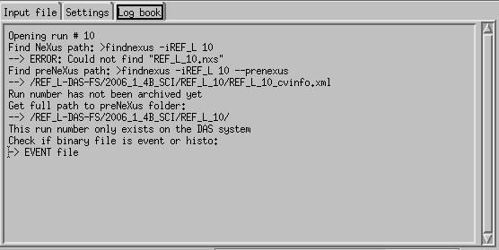
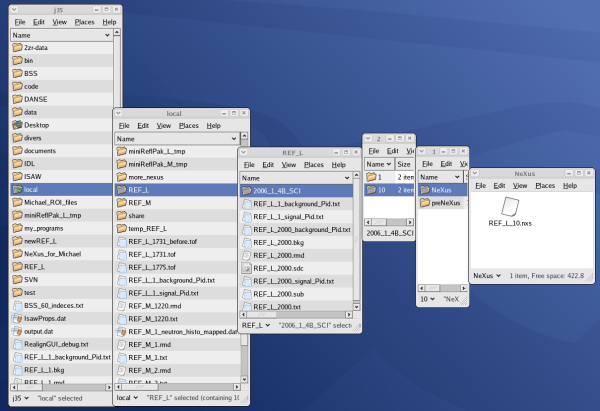
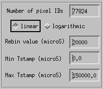
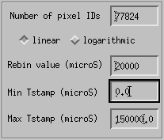
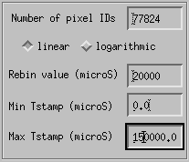

From the sns_idl_tools portal, to reach the rebinNeXus idl tools, select rebinNeXus, click 'launch application' and click the IDL virtual machine flash window.

Select your instrument and press ENTER.
TABLE OF CONTENTS
rebinNeXus is a tool that allows the user to create a local (~/ucams/local/) NeXus file. rebinNeXus takes a run number as argument and will look for the archive NeXus file first, then for the preNeXus files on the DAS server. It is then possible to create a local NeXus file from an already archived NeXus file or from the preNeXus files. One must keep in mind that the new NeXus file created using this tool will not be archived.
All three instruments will then present the same GUI at that point. Only the PREVIEW window will change from one instrument to the other.

The main gui is composed of 3 tabs, Input file,
Settings and Log book.
- Input file
The left side of the Input file tab populates once a run number has been loaded. It differs if the input file is in event or histogram mode.
- Event mode:
- The number of pixelIDs is predefined accordingly to the instrument
(77824 for REF_L and rEF_M, 9216 for BSS). This field is editable but must be use with cautious.
- Two histogramming mode are possible: linear and logarithmic.
The next text box label reflects the histogramming mode selected. If this on is linear, the label
is rebin value that is the time bins width (in microS). If the mode selected is logarithmic,
the label is rebin coefficient, which corresponds to the following equation:

- Min Tstamp and Max Tstamp are the minimum and maximum time stamps
of the histogramming file.

- Histograme mode:
- Pixelids is, line in the case of the event file, the number of pixel
IDs for the instrument selected (77824 for REF_L and REF_M and 9216 for BSS).
- Bins nbr the number of bins found in the histogram file.
Due to the fact that the input file is a histogram mode, it is not possible to rehistogram that file
but only use the data as they are.

The top part of this tab gives the type of the file loaded (event or histogram) and offer the possibility to get or not a preview of the data (integrated over time). This preview will differ from one instrument to the other (256x304 for REF_L, 304x256 for REF_M and 2x64x64 for BSS) as shown here:
- Preview of the data
- Information about run
The rigth side of the Input file tab gives some very generic information about the run:
- XML FILE: the matrix of the preNeXus and NeXus files for this run.
- Title: the tile of the run as given by the title field of the runinfo file.
- Notes: the notes found in the same preNeXus file
- Special notes: field of the same name found in same the preNeXus file
- Script ID: script ID field from runinfo preNeXus file
The runinfo.xml and cvinfo.xml buttons allows to display the contents of these
two files.

- Settings
In this tab, you can visualize which mapping, translation and geometry
files the program is going to use to create the NeXus file. The program automatically determines the
last up to date mapping, translation and geometry files.

- Log book
Gives details information about the various processes involved (loading, plotting, creation of the NeXus file...).

Here is a detail proces that you can follow to create a local NeXus file.
First enter the run number of interest in the top left box. The program runs in the back the findnexus command and looks for the archived NeXus file and if not found, the DAS preNeXus files of the corresponding run number. From there 5 scenarii are possible according to the run number given:
In this case, you can display the data by activating the preview and check the runinfo.xml and
cvinfo.xml files. Click the Create local NeXus file button to create the NeXus file. This file will be located in your own local directory ~/local/instrument_name where instrument_name is REF_L, REF_M or BSS.
For example, if instrument is REF_L and run number is 10, the NeXus file will be located here
(if you are j35):

When working in event mode, or in other terms with a run number that contains an event file, it is possible
to histogram the data using two modes, linear or logarithmic. By default, the linear histogramming is selected.
Enter the rebin value if using the linear histogramming, or coefficient if using the logarithmic coefficient.

Enter the minimum and maximum time stamps then click Create local NeXus file.